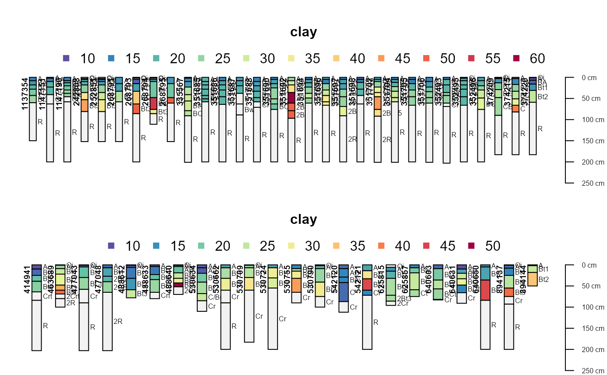
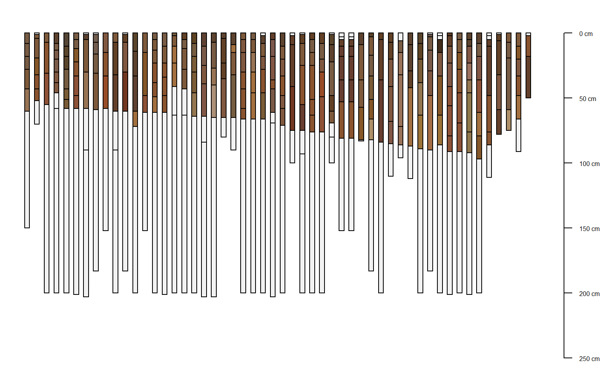
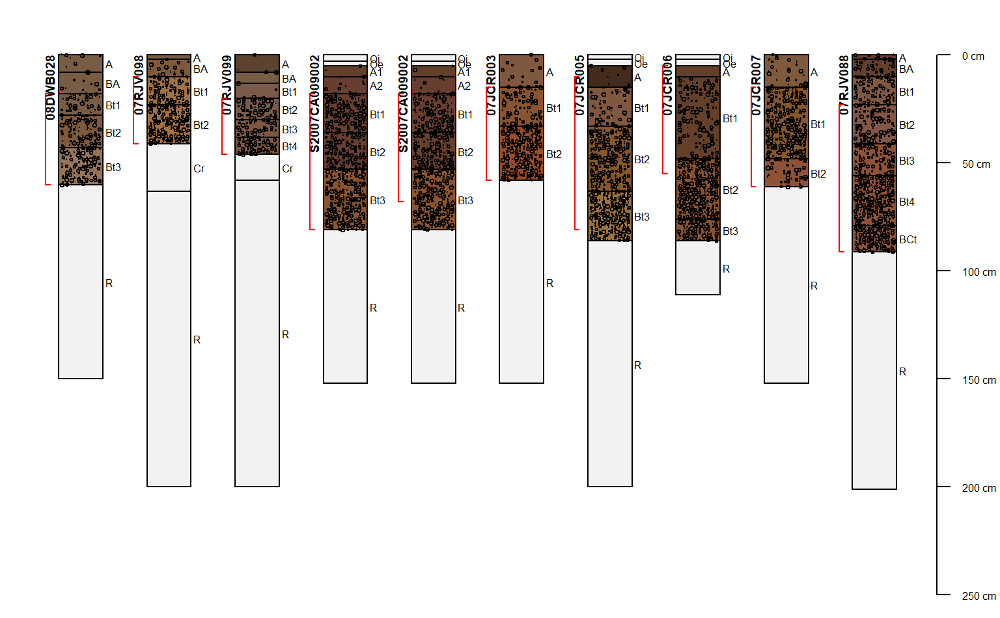
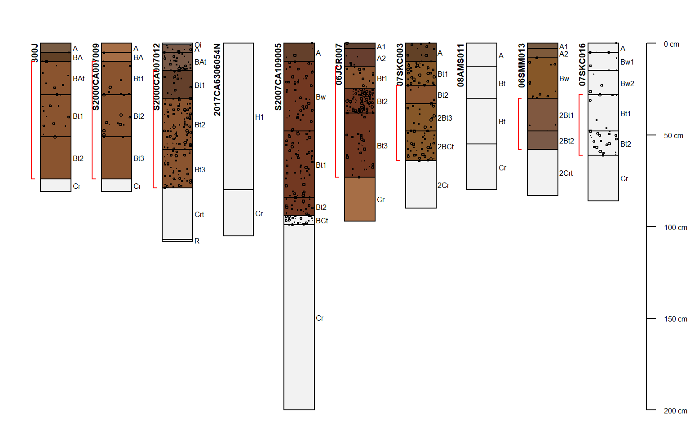

Example SoilProfilecollection Objects Returned by fetchNASIS.
loafercreek.RdSeveral examples of soil profile collections returned by fetchNASIS(from='pedons') as SoilProfileCollection objects.
data(loafercreek) data(gopheridge) data(mineralKing)
Examples
# \donttest{ if(require("aqp")) { # load example dataset data("gopheridge") # what kind of object is this? class(gopheridge) # how many profiles? length(gopheridge) # there are 60 profiles, this calls for a split plot par(mar=c(0,0,0,0), mfrow=c(2,1)) # plot soil colors plot(gopheridge[1:30, ], name='hzname', color='soil_color') plot(gopheridge[31:60, ], name='hzname', color='soil_color') # need a larger top margin for legend par(mar=c(0,0,4,0), mfrow=c(2,1)) # generate colors based on clay content plot(gopheridge[1:30, ], name='hzname', color='clay') plot(gopheridge[31:60, ], name='hzname', color='clay') # single row and no labels par(mar=c(0,0,0,0), mfrow=c(1,1)) # plot soils sorted by depth to contact plot(gopheridge, name='', print.id=FALSE, plot.order=order(gopheridge$bedrckdepth)) # plot first 10 profiles plot(gopheridge[1:10, ], name='hzname', color='soil_color', label='pedon_id', id.style='side') # add rock fragment data to plot: addVolumeFraction(gopheridge[1:10, ], colname='total_frags_pct') # add diagnostic horizons addDiagnosticBracket(gopheridge[1:10, ], kind='argillic horizon', col='red', offset=-0.4) ## loafercreek data("loafercreek") # plot first 10 profiles plot(loafercreek[1:10, ], name='hzname', color='soil_color', label='pedon_id', id.style='side') # add rock fragment data to plot: addVolumeFraction(loafercreek[1:10, ], colname='total_frags_pct') # add diagnostic horizons addDiagnosticBracket(loafercreek[1:10, ], kind='argillic horizon', col='red', offset=-0.4) }# }